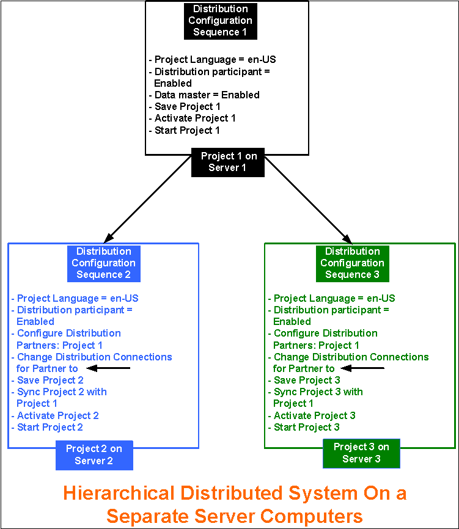

Hierarchical Distributed Systems on Separate Servers in Automatic Mode
Scenario
You want to set up a Hierarchical Distributed System on separate Servers. To do this, you must configure the projects on separate Servers in distribution with a (unidirectional) distribution connection.
The following procedure describes the procedure to set up three projects in Hierarchical distribution using Automatic mode on separate Servers.

NOTE:
On separate Servers, you can only set those projects in distribution which have the same security configuration (server communication set to secured or unsecured). We recommend setting the projects in distribution to secured configurations.
Prerequisites
- Using the distribution media, you have installed the setup type: server on three different computers. The software version of Desigo CC, as well as the extensions installed on all the distribution Partner, Systems is the same.
- The extensions configured in one distribution partner project are installed on all the other systems participating in distribution.
- For working with Windows App client, you have installed Internet Information Services (IIS). Install Internet Information Services (IIS) on at least one Server.
- In SMC ensure the following for the projects participating in distribution:
- You have two or more projects with project status as
Stopped.
For example, you have three stopped projects Project 1, Project 2, and Project 3 with unique port numbers. You cannot set up an outdated project in distribution. You must first upgrade it to the current software version. - Each project has a unique system name and system ID.
- The languages configured in the project and their sequence where they are configured is the same in all the distribution participants.
- On all projects, you have configured server communication as secured. Additionally, on Project1 you have web server communication as Local, so you can log into the Windows App client and work with other projects in distribution.
- The server project folder is shared with the user logged onto the operating system of the distribution partner system using the Project Shares expander.
- For working with distribution using the Flex Client, the project's Pmon user (System account user as domain user) must have access rights on all the shared Server projects folders in distribution.
- For working in distribution using the Windows App Client, a web application is created and linked to Project1. The web application user must be added in the list of allowed users in the Project Shares expander of the systems in the distribution.
- The same root certificate (.cer file) is imported in TRCA of all the systems participating in distribution. The host certificate (.pfx file), created from the root certificate present on the system participating in distribution, is available in the Personal store.
NOTE: To make the certificate available on the distribution partner system you can copy the root and the distribution partner system host files from the server to a removable drive that you can use at the distribution partner system to import the certificates. You can also use the network access between the server and the distribution partner system to import the root and distribution partner system host into the distribution partner system. - For each project in distribution there must be a separate HDB linked to the project. The HDBs can be on the same Server as that of the projects as three HDBs or as separate HDBs on a remote SQL Server.
If the HDBs are on the same SQL Servers connected to projects in distribution, they are linked to each other automatically.
When the HDBs are on different SQL Servers and you want the projects to see the data from another SQL linked to another project in distribution, you must manually link the SQL instances. - The user who is going to work with SMC (for example, create, start, and activate a project) has administrative rights. However, a non-admin user who has rights on the shared project folder on the Server and rights on the host certificate used for securing the server communication on the distribution partner system, can also launch the installed client.
Deployment Sequence Diagram

Steps
Perform the following tasks on the separate Server using SMC.
NOTE:
To avoid having to restart the project, follow the suggested distribution configuration sequence.
- On Server 1, perform the following steps using SMC for Project 1:
- In the SMC tree, select Projects > [project].
- Click Edit
 .
. - In the Server Project Information expander, do the following:
a. Enable the distribution by selecting the Distribution Participant check box.
b. Select the Data Master check box. - Click Save Project
 .
. - Click OK.
- Click Activate Project
 .
. - Click Start Project
 .
. - The Project1 is started, activated and enabled for distribution on Server1.
- Log onto Server2, and perform the following steps using SMC for Project2.
- In the SMC tree, select Projects > [stopped project].
- Click Edit
 .
. - In the Server Project Information expander, enable the distribution for Project2 by selecting the Distribution Participant check box.
- To add the distribution partner projects in Automatic mode, in the Distribution Participants expander, click Browse. When the Browse for Distribution Partner dialog box displays, browse for the distribution partner projects.
- In the Browse for Distribution Partner dialog box, perform the following steps:
(For selecting servers in domain) In the Domain Tree View, make sure that the correct domain is selected. By default, the domain of your computer is selected.
In case of Workgroup, the workgroup of your computer is selected by default. - (Applicable only for servers in domain) In the Enter management system name or description field, enter the computer name of the server, if you already know it, or you can type a partial text string.
- (Applicable only for servers in domain ) Click Check Name.
- A list of matching servers, available in the selected domain, whose name contains the entered string, displays in the Filtered Server Computers list.
In case of a Workgroup, all the server computers available in the Workgroup are listed. - Select the server where you want to set up distribution.
NOTE: If the Service port of the server name provided is other than the default, a message displays. In this case, proceed as follows:
a. Enter the Service port number on the selected server.
b. Click Get Projects to obtain the list of projects available on the selected server. - A list of available projects (except for the outdated projects) displays in the Available Projects list.
- Select the check box adjacent to the project (Project1) that you want to add as distribution participants.
- Click Add.
- The selected project, Project1, is added in the Selected Projects list.
NOTE 1: You cannot add projects that have project languages or extension modules configuration that are different from the Originator project.
NOTE 2: You can add a project for which the distribution is disabled. However, the distribution will not work for such projects. - Click Add Distribution Partners.
- The selected distribution participants are added to the list distribution participants in the Distribution Participants expander.
- A corresponding entry for the selected distribution partner project is added in the Distribution Connections expander displaying the default Distribution Connection (bi-directional
 ).
).
The Partner Dist Port and the Partner Proxy Port for the distribution partner project is added. - In the Distribution Connections expander, change the default (bi-directional connection to (unidirectional)
 for the partner projects so that
for the partner projects so that
Project2 Project1. - Click Save Project .
- Click OK for all the messages that display.
- In the Distribution Participants expander, click Sync to sync the partner projects with details on the originator project.
- (Optional) Click Yes to open and view the synchronization report.
- Click Activate Project .
- Click Start Project.
- Repeat steps 10 to 22 to set up Project3 on Server3 in distribution with Project1 on Server1.
- When you sync, the distribution configuration of projects Project2 and Project3 is aligned with the Project1 such that connection on Project1 and Project2 are respectively shown below
Project 2 Project 1 and
Project 3 Project 1
It removes any duplicate entries present on the Originator, as well as the Partner System. - The distribution is configured with Connection as unidirectional from Supervising System1 to the Supervised System2 and System3. Therefore, you can set up the Hierarchical Distributed Systems.
- Launch the installed client on the Supervising System (System1 with Project1 as Data Master).
- With the System Manager in Engineering mode and the System Manager in the Management View, select Project 1 > System Settings > Security and perform the following on the Supervising System.
a. Create the Global User.
b. Create Global User Group.
c. Assign the Global User to the Global User group.
d. Assign global Scopes rights and the Application rights.
e. Enable User. - In the Summary bar, select Menu > Operator > Switchover and switch the operator from the current user to the Global User.
- You are now logged in with the Global User into the installed client of the Supervising System (Originator Project1). You can now work with the distribution partner projects Project2 (System2) and Project3 (System3).
- You can also launch the Windows App client for System 1 (with Project1) and work with Partner Systems in distribution, System2 (with Project2) and System3 (with Project3).
- If you activate one of the Partner System say System2 with Project2, and log onto the Installed Client on System2, you can work with only the Local System (System2 with Project2).